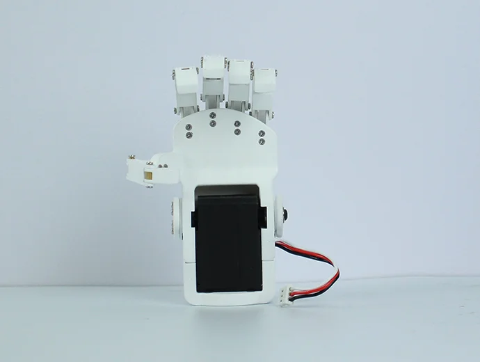
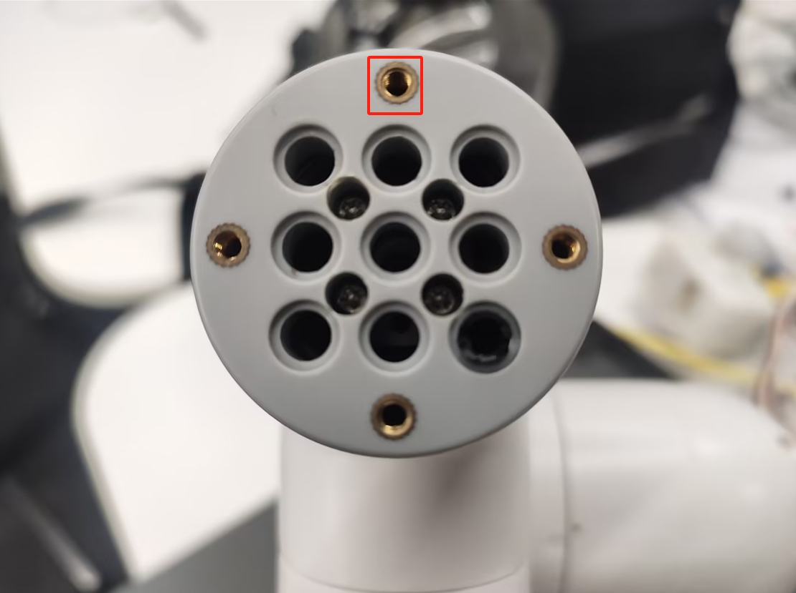

Dexterous Hand
Applicable models: myCobot 280, myPalletizer 260, mechArm 270
Product Image

Specifications:
| Name | mycobot Dexterous Claw |
|---|---|
| Model | Dexterous Hand |
| Material | 3D Printing |
| Size | 112×94×50mm |
| Color | White |
| Transmission Mode | Gear + Connecting Rod |
| Clamping Range | 20-45mm |
| Maximum Clamping Force | 100g |
| Fixing Mode | Screw Fixing |
| Environment Requirements | Normal Temperature and Pressure |
| Control Interface | Serial Control |
| Applicable Equipment | ER myCobot 280 Series, ER mechArm 270 Series, ER myPalletizer 260 Series |
Dexterous Hand: Used when gripping objects
Introduction
- The gripper is a robot component that can achieve functions similar to human hands. It has the advantages of a complex structure, firm gripping of objects, not easy to drop, and easy operation. The gripper kit includes gripper accessories and LEGO technology parts. The end effector of the robot arm is controlled by a programmable system to achieve functions such as object gripping and multi-point positioning.
Working principle
- Driven by a motor, the gripper's finger surface makes linear reciprocating motion to achieve opening or closing. The acceleration and deceleration of the electric gripper can be controlled, the impact on the workpiece can be minimized, the positioning point can be controlled, and the clamping can be controlled
Applicable objects
Small cubes
Small balls
Long objects
Gripper installation:
Insert the Lego connector into the gripper hole: 

Electrical connection
Insert the gripper with the connector installed into the end of the robot arm

Python programming control
- M5 Version
from pymycobot.mycobot import MyCobot
import time
# Initialize a MyCobot object
mc = MyCobot("COM3", 115200)
mc.set_encoder(7,2048,40)#Open
time.sleep(2)
mc.set_encoder(7,2300,40)#Hold
time.sleep(2)
mc.set_encoder(7,2048,40)#Hold
- Pi version ```python from pymycobot.mycobot import MyCobot from pymycobot import PI_PORT, PI_BAUD # When using the Raspberry Pi version of mycobot, you can reference these two variables to initialize MyCobot import time
Initialize a MyCobot object
mc = MyCobot(PI_PORT, PI_BAUD) mc.set_encoder(7,2048,40)#Open time.sleep(2) mc.set_encoder(7,2300,40)#Hold tight time.sleep(2) mc.set_encoder(7,2048,40)#Hold tight ```